Windows
emmmmmmm
方法一:steam++方法二:修改host
方法三:浏览器加速插件
steam++
steam++官网
ps:目前已经上线微软应用商城(Microsoft Store)
搜索Watt Toolkit
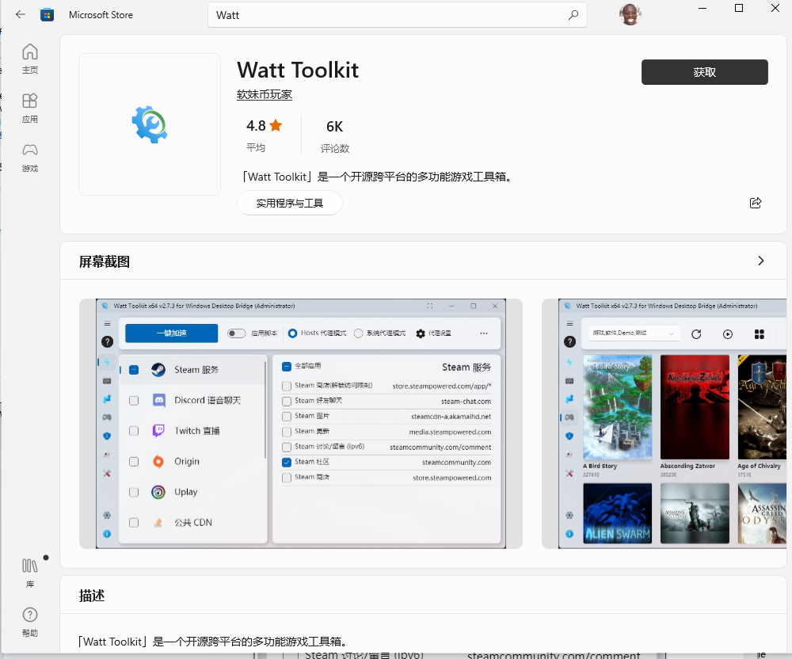打开Watt ToolKit
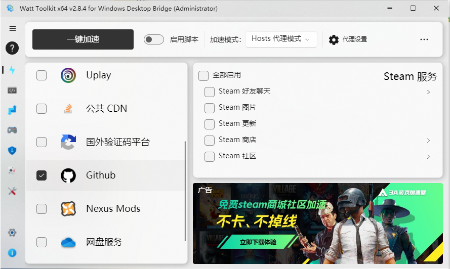搜索Github,选择复选框
点击一键加速
此时进入浏览器GitHub就会秒开了
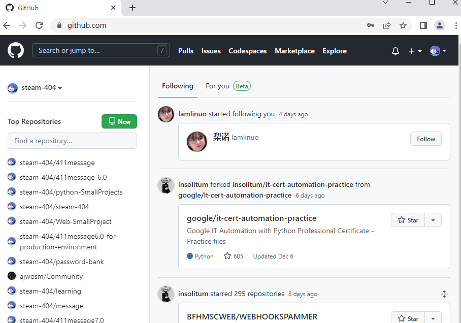修改host
第一步,随便找一个ip查询工具
ip138查询网 ip地址查询 站长工具已第一个为例
输入github.com-点击查询
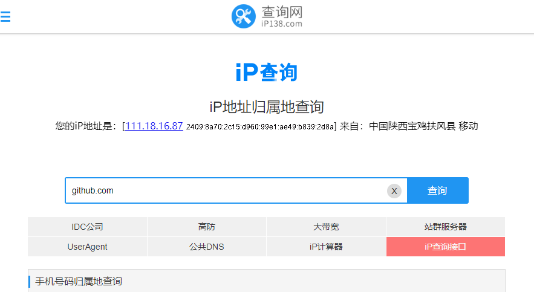可以看到有两个ip,把它复制下来
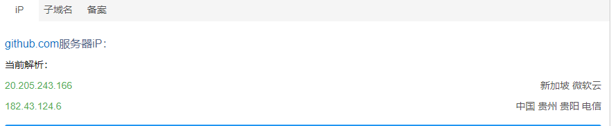以管理员身份打开记事本
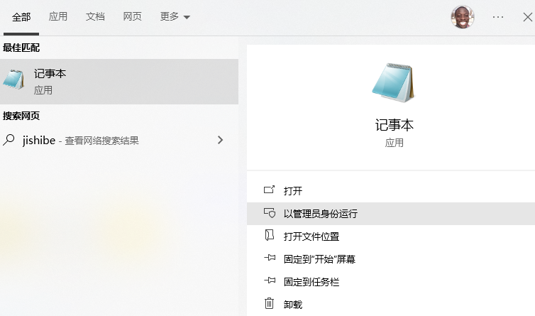选择打开
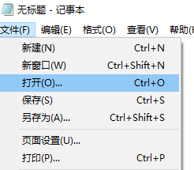打开如下路径的 host文件
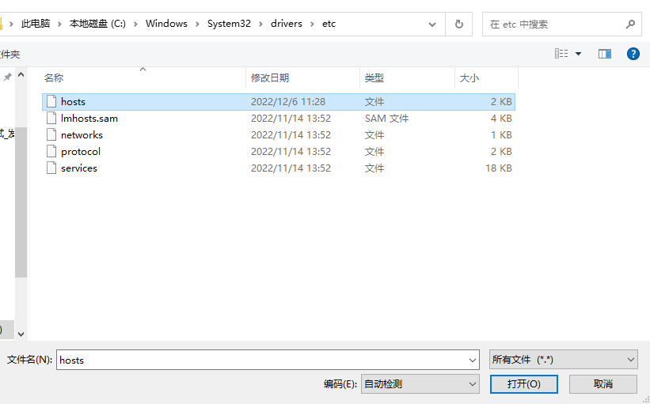在末尾添加 ip www.github.com
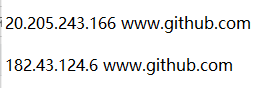然后保存，就好了
缺点是ip过一段时间会变,如果不能访问就重复这个操作就行
浏览器插件
以火狐浏览器为例
点击右上角-选择扩展和主题
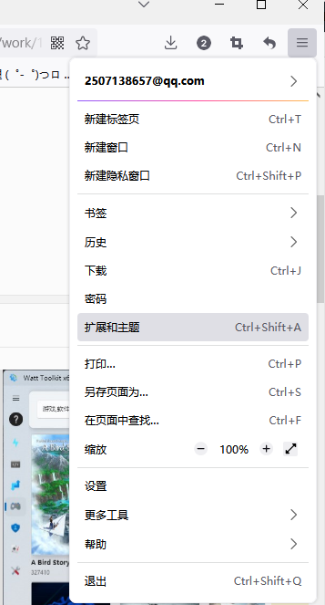选择扩展-搜索github加速
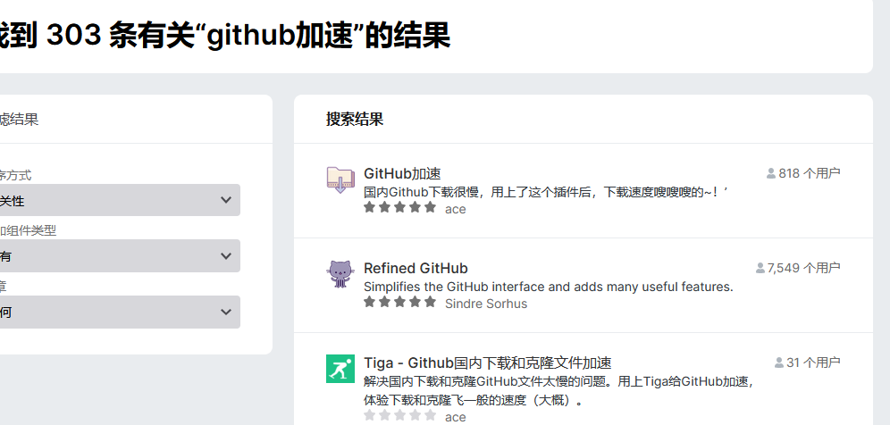点击进入-选择添加
这东西感觉没用
Linux